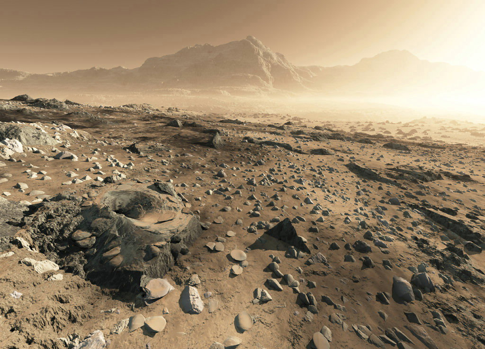

High News
Новостной портал


Используя набор данных миссии Cassini («Кассини»), собранных к настоящему времени окончательно, астрономы составили первую глобальную топографическую карту спутника Сатурна Титана, которая откроет новые возможности изучения поверхности Титана и текущих по ней потоков жидкости (жидких углеводородов). Эти результаты представлены в двух новых научных работах, выполненных в рамках грантов НАСА и Итальянского космического агентства.
Во второй научной работе ученые во главе с Алексом Хейзом (Alex Hayes), ассистент-профессором астрономии Корнелльского университета, делают при помощи топографической карты, составленной командой Корлиса, ряд интересных открытий. Во-первых, авторы обнаруживают, что три моря на Титане имеют одинаковый уровень. Согласно Хейзу и коллегам это указывает на то, что моря сообщаются между собой подповерхностными каналами или поверхностными каналами достаточно высокой проходимости. Во-вторых, Хейз находит подтверждение выдвинутой им ранее гипотезе о том, что озера Титана также сообщаются между собой, которое состоит в том, что пересохшие озера на поверхности Титана располагаются почти исключительно выше уровня озер, наполненных жидкостью. Третьей интересной находкой команды Хейза стало обнаружение того факта, что озера Титана имеют очень крутые, почти отвесные берега, в то время как согласно моделям их формирование предполагает более пологие берега. Хейз считает, что разрешение этой загадки даст ключи к пониманию механизма формирования полярных бассейнов поверхности Титана.
